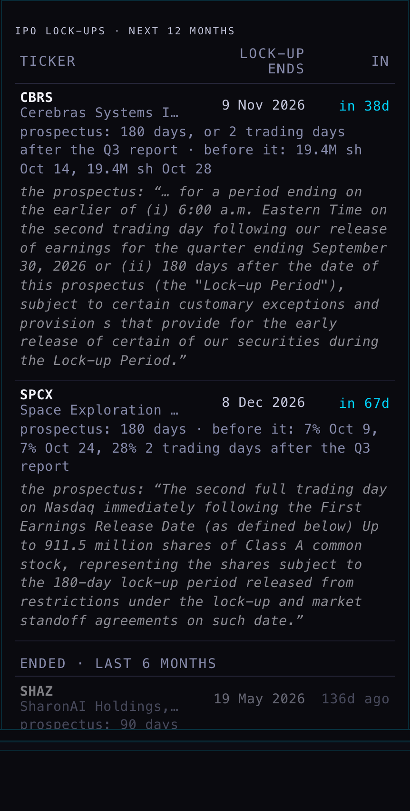
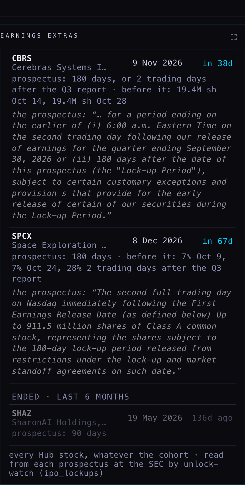
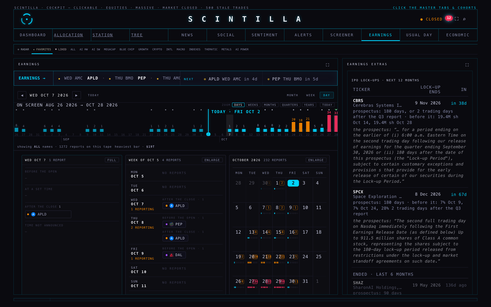
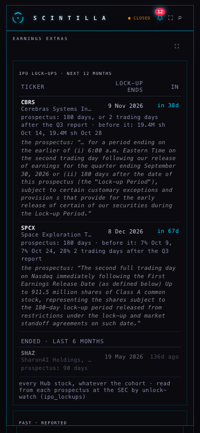

IPO lock-ups: when the insiders' IPO shares become free to sell, read from the prospectus
R2 Part B · built 2 Oct 2026, 20:53–21:50 ET · branch hub/r2-unlock-20261002 from the live Hub (a389c7c) · one new table ipo_lockups and one new nightly job unlock-watch (deployed, version 5, run by hand) · no schedule set, no other table touched, the Hub not deployed · pictures taken headless [MEASURED 2 Oct 2026, 21:38–21:46 ET]
00 · WHAT YOU WILL SEE
You asked on 2 Oct: "Can we get pre-IPO unlock dates from FMP, Massive or somewhere else?" Neither data company has them. So a nightly job now reads each recent IPO's prospectus at the SEC (the sales document every IPO files, free to read) and writes down when the lock-up ends. The lock-up is the insiders' and early investors' promise not to sell for a set time after the IPO, usually 180 days. When it ends, a large block of shares may come to market at once.
As you asked later that evening, it lives in two places on the Hub. It is not on a dashboard strip.
- The EARNINGS page (top menu), right-hand column, new card IPO LOCK-UPS · NEXT 12 MONTHS. It covers every Hub stock whose lock-up ends in the next 12 months, soonest first, with the date, the days to go, the terms from the prospectus, the early-release rule and the prospectus's own sentence. Under it come the ones that ended in the last 6 months, dimmed. Tap a row to open the company.
- The company view → STATS → ACTIVITY & DATES gets one line: "lock-up ends …".

The card (1680 wide, zoomed). CBRS Cerebras: 9 Nov 2026, in 38 days. Prospectus: 180 days, or 2 trading days after the Q3 report if that comes first; before that, 19.4 million shares on 14 Oct and 28 Oct. SPCX SpaceX: 8 Dec 2026, in 67 days; before that, 7% on 9 Oct, 7% on 24 Oct, and 28% two trading days after the Q3 report. Under each is the prospectus's own sentence.

Scrolled down: ENDED · LAST 6 MONTHS, dimmed. SHAZ (SharonAI): its 90-day lock-up ended 19 May 2026, 136 days ago. The footnote says it covers every Hub stock, whatever cohort is selected.

Where it sits: the EARNINGS page, right column ("EARNINGS EXTRAS"), between UPCOMING and PAST · REPORTED. This picture scrolls the column to the card.

Cerebras · STATS · ACTIVITY & DATES: lock-up ends 9 Nov 2026 (prospectus: 180 days, or 2 trading days after the Q3 report · before it: 19.4M sh Oct 14, 19.4M sh Oct 28). The row above shows the next report, 12 Nov (estimated). That is after 9 Nov, so on today's dates 9 Nov comes first.

SpaceX · STATS: lock-up ends 8 Dec 2026 (prospectus: 180 days · before it: 7% Oct 9, 7% Oct 24, 28% 2 trading days after the Q3 report).

Phone, 390 wide. On a phone the right column is a small box that scrolls on its own. Its ⛶ button opens it full screen, which is how this picture was taken. The days to go stay on the phone.

Phone: the Cerebras line wraps instead of being cut off.
The walk (tools/r2u-walk.mjs, records in tools/walk-1680.json and walk-390.json) found 0 unlock entries on the dashboard's EARNINGS strip. It read the table once, sent no writes and hit no page errors.
01 · WHAT WAS REMOVED (YOUR WORD: "I DECIDE WHEN WE PUT A DASHBOARD STRIP")
For about half an hour tonight, on this branch only (never deployed), the dashboard's EARNINGS → strip carried periwinkle "UNLOCK" entries. They are gone:
- The strip's code is back to exactly the live page's, character for character. A test checks it.
- Removed with it: the UNLOCK chips, their colour, the "UNLOCKS · 90 DAYS" heading, the estimated "≈" dates, and the extra read of report dates those needed.
- Removed from this page's pictures folder: the six strip pictures.
02 · WHAT THE JOB FOUND TONIGHT
It went through the stocks the Hub serves: the cohorts list (613 names) without funds, indexes, futures, rates and crypto, which leaves 455 stocks. It checked FMP's IPO calendar one month at a time for the last 18 months (2,470 IPOs) and each stock's stored IPO date. Three of our stocks listed in that window.
| stock | how it listed | prospectus dated | lock-up | main lock-up ends | steps still ahead before it (the prospectus's own table) |
|---|
| CBRS Cerebras | IPO, first trade 14 May 2026 | 13 May 2026 | 180 days | 9 Nov 2026, or 6:00 a.m. on the 2nd trading day after the Q3 report if earlier | 19.4M shares on 14 Oct · 19.4M on 28 Oct |
| SPCX SpaceX | IPO, first trade 12 Jun 2026 | 11 Jun 2026 | 180 days | 8 Dec 2026, the prospectus's own words: "December 8, 2026 (180th day after the date of this prospectus)" | 7% (328.4M shares) on 9 Oct · 7% on 24 Oct · 28% (1.3 billion shares) 2 trading days after the Q3 report · a longer lock-up for some holders continues in steps until 12 Jun 2027 |
| SHAZ SharonAI | SPAC merger Dec 2025, then an underwritten Nasdaq offering on 18 Feb 2026 | 18 Feb 2026 | 90 days | ended 19 May 2026 (dimmed on the card) | see 04: a merger lock-up of about one year may still apply |
R1's check cases (run without writing)
| stock | R1 said | the job read |
|---|
| CBRS | 10 Nov 2026, or 2 trading days after Q3 | 9 Nov 2026, or 2 trading days after Q3 (one day earlier, see below) |
| SPCX | about 9 Dec 2026; 180 days assumed, the clause not found in the first 4 MB | 8 Dec 2026, clause found at 6.1 MB of a 12 MB prospectus, plus the staged steps |
| ARM · ALAB · RDDT · CRWV | all past | all past: 11 Mar 2024 · 15 Sep 2024 · 16 Sep 2024 (Reddit's term, which R1 could not isolate, is 180 days, or 3 trading days after its Q2 2024 report) · 23 Sep 2025 |
| NBIS | a relisting, so no lock-up | Not seen as a relisting. FMP only knows Nebius's 2011 IPO (as Yandex), and its 2024 return to Nasdaq is on no IPO calendar. It is outside the window, so nothing is written or shown, which is right for a relisting. The relisting rule itself is in place and tested. |
Why one day earlier than R1. The prospectus counts "180 days after the date of this prospectus". That date is printed on its cover ("Prospectus dated May 13, 2026"): the evening the shares were priced, the day before trading began. R1 counted from the first trading day. SpaceX's prospectus settles it: its own table calls 8 December the 180th day after its 11 June date.
03 · HOW IT WORKS, AND WHERE EACH NUMBER COMES FROM
- The clerk (unlock-watch, a small program on our database's server) will run once a night once scheduled. It asks FMP for the IPO calendar one month at a time, because asking for a whole year silently returns only the newest month. It keeps only stocks the Hub serves.
- For each new listing it asks FMP for the company's filing list and picks the final prospectus (form 424B4). It then reads that document straight from the SEC, which is free and needs no key. It stops once it has read the lock-up section: 6.0 of Cerebras's 8.5 MB, 6.3 of SpaceX's 12 MB.
- It keeps: the date on the cover, the lock-up length the sentences agree on, the sentence itself, any "or earlier if…" rule, and the prospectus's own Earliest Date Available for Sale table, row by row. All of it goes into one row per stock in ipo_lockups.
- The Hub reads that small table once every six hours and writes nothing. The EARNINGS card and the STATS line both come from it.
04 · WHAT COULD BE WRONG, AND ONE THING THAT WENT WRONG TONIGHT
- Tonight, 21:33–21:35 ET: the SEC refused the clerk's reads (it limits busy addresses, and the clerk's server address is shared). One run then wrote "assumed 180 days" over the three good rows. For about three minutes CBRS read 10 Nov and SPCX 9 Dec, and the sentences were gone. I put the rows back from the run before it. The clerk now treats a refused read as "write nothing, keep what is stored", and never replaces a date read from the prospectus with an assumption. The refusal cleared after about 3 minutes, and a fresh run at 21:36 ET wrote the same dates.
- SPAC holders are not covered yet. SharonAI's prospectus also says its former sponsor's shares stay locked until one year after the December 2025 merger (about December 2026), or earlier if the price holds above $12. The clerk does not read that kind of clause yet, so that date is missing.
- A prospectus can contradict itself. SharonAI's says 90 days in two places and 180 in another. The clerk took the majority. Both have passed.
- Steps tied to an earnings report have no fixed date (SpaceX's 28%, about 1.3 billion shares, two trading days after its Q3 report). The card names them in words and does not guess a date.
- Steps that only happen if the share price passes a test are left out.
- A stock that listed under a different symbol, or came back to the market (like Nebius), is found only if FMP's IPO calendar lists it.
- Some websites quote the unlock one day later, counted from the first trading day. This job follows the prospectus's own count.
05 · WHAT WAS NOT DONE
- No schedule was set; the nightly run is the coordinator's step. Suggested: every weekday night at 22:30 ET, unlock-watch?mode=pass. That pass re-reads a prospectus only for a new name, or for a row older than a week.
- The Hub was not deployed. The card and the STATS line exist on this branch and were checked headless.
- No alert is raised. You said things need a home on the Hub before alerts.
- Massive's IPO data was not used. FMP plus the SEC answered every case.
06 · DECISIONS FOR YOU
1 · Count down to the next step, or to the main end? The card's "in 67d" for SpaceX counts to 8 December. Its first 328-million-share step is in 7 days and only appears in the line under it. Recommendation: keep the main end as the date, and add "next step in Nd" to that line.
2 · Add SPAC holders' lock-ups? These are the "one year after the merger" locks, like SharonAI's founder shares around December 2026. Recommendation: yes, as the next small step.
3 · Run it every weekday night? Recommendation: yes, at 22:30 ET. A refused SEC read now leaves the stored row alone, so a bad night cannot wipe anything.
Files: supabase/functions/unlock-watch/index.ts and lib.ts · supabase/migrations/20261002_ipo_lockups.sql (undo: …_ROLLBACK.sql, also at _archive/backend-fix-20260928/ROLLBACK-ipo_lockups-20261002.sql) · tests/r2-unlock-20261002.test.mjs (13 tests on real prospectus text, no network) · the Hub: index.html, the block "R2 · 2 OCT · IPO LOCK-UPS", the card in eventsRoomHTML, the STATS line in statsActivityHTML. To turn it off: ?unlock=off or UNLOCK_ON = false.